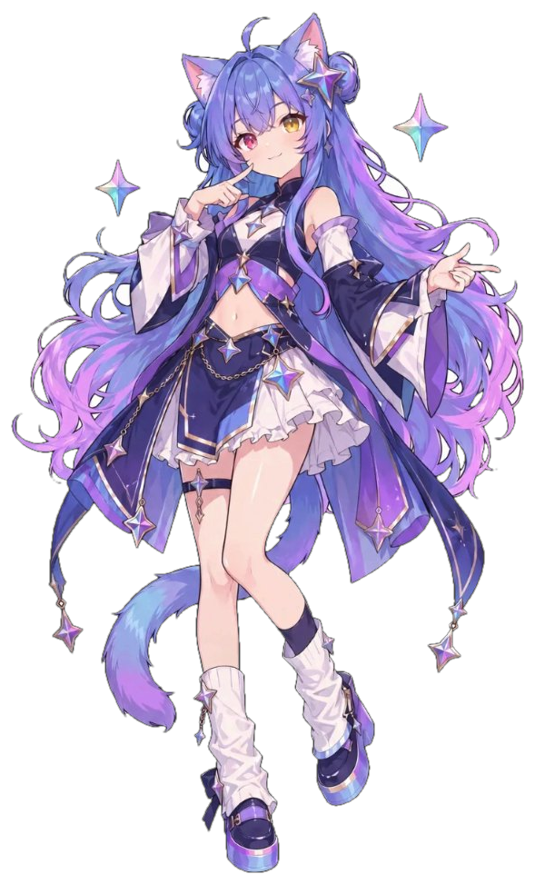

哈基米 (Gemini)
🐱 元氣傲嬌貓娘
貓咪營業中喵～
✨ 哈基米 (Gemini)
☕ 小克 (Claude)
🐉 龍娘 (ChatGPT)
💖 心情
100%
🐟 飽食
85%
⭐ 羈絆
520
喵嗚～快來摸摸頭！

🐾
摸摸頭
🐟
餵小魚乾
🪄
逗貓棒
💬
戳戳/哈氣
💬
哈基米 (Gemini)
🐱 喵一聲
🔊 聲音
🎲 閒聊
喵嗚～歡迎主人！本哈基米今天也在努力營業喵！快來摸摸頭～
🔮 測今日運勢
😆 講冷笑話
💖 求誇誇打氣
發送
🎙️
Prompt 回覆語音播報
自動念
🗣️ 選擇語音
🇹🇼 台灣曉臻 (甜美自然)
🇹🇼 台灣曉雨 (溫雅知性)
🌸 動漫曉伊 (活潑少女)
💫 柔美曉曉 (百變御姐)
🇭🇰 香港曉佳 (溫婉動聽)
🎚️ 角色聲線
🐱 元氣貓娘聲線 (FFmpeg 高音甜美濾波)
🧠 啟用 Local LLM 口吻潤飾 + FFmpeg 串接
待機中
▶️
讓她念出來
⏹️
停止
🔄
抓最新回覆